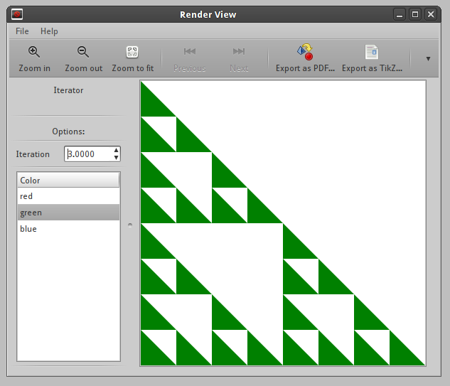
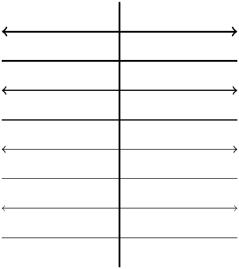

Example GTK + Cairo output

module Main where
import Graphics.Craftwerk.Core
import Graphics.Craftwerk.UI
import Graphics.Craftwerk.Core.Driver.Cairo
import qualified Data.Map as Map
main =
do displayMultiple
([ ("Iteration", RangeOption 1 6 1 1)
, ("Color", ChoiceOption ["red"
,"green"
,"blue"] 0)])
$
[ ("Iterator",
renderFigure 1 1
(\opt -> return $
colorStyle (choice $ opt Map.! "Color") $
iterations
(round $ value (opt Map.! "Iteration"))
triangle
))]
triangle = line [(0,0),(0,1),(1,0)]
colorStyle col = style newStyle { closePath = yes
, fillColor =
Just $ [red,green,blue] !!
col
, stroke = no
, fill = yes}
iterations :: Int -> Figure -> Figure
iterations 0 f = f
iterations i f =
let nf = iterations (i-1) f
in scale (0.5,0.5) $ composition
[
translate (0,1) $ nf
, translate (0,0) $ nf
, translate (1,0) $ nf
]
Example of TikZ output

module Main where
import Graphics.Craftwerk.Core
-- A simple example that displays lines of differend widths
main = putStrLn . figureToTikzPicture
$ style newStyle { closePath = no
, stroke = yes }
$ composition
[
line [(3,0.5),(3,5)]
, testlines
, style newStyle { arrowTips = arrow (<=>)} $
translate (0,0.5) $ testlines
]
testlines =
composition
[ style (setLineWidth verythin) $ line [(1,1),(5,1)]
, style (setLineWidth thin) $ line [(1,2),(5,2)]
, style (setLineWidth semithick) $ line [(1,3),(5,3)]
, style (setLineWidth thick) $ line [(1,4),(5,4)]
]
and the resulting TikZ code
\begin{tikzpicture}[line cap=butt,line join=miter,miter limit=10.0,line width=1.0,dash phase=0.0,solid]
\definecolor{linec}{rgb}{0.00,0.00,0.00}
\definecolor{fillc}{rgb}{1.00,1.00,1.00}
\path[draw=linec] (3.0,0.5) -- (3.0,5.0) ;
\begin{scope}[line width=0.2]
\path[draw=linec] (1.0,1.0) -- (5.0,1.0) ;
\end{scope}
\begin{scope}[line width=0.4]
\path[draw=linec] (1.0,2.0) -- (5.0,2.0) ;
\end{scope}
\begin{scope}[line width=0.6]
\path[draw=linec] (1.0,3.0) -- (5.0,3.0) ;
\end{scope}
\begin{scope}[line width=0.8]
\path[draw=linec] (1.0,4.0) -- (5.0,4.0) ;
\end{scope}
\begin{scope}[xshift=0.0cm,yshift=0.5cm]
\begin{scope}[line width=0.2]
\path[<->,draw=linec] (1.0,1.0) -- (5.0,1.0) ;
\end{scope}
\begin{scope}[line width=0.4]
\path[<->,draw=linec] (1.0,2.0) -- (5.0,2.0) ;
\end{scope}
\begin{scope}[line width=0.6]
\path[<->,draw=linec] (1.0,3.0) -- (5.0,3.0) ;
\end{scope}
\begin{scope}[line width=0.8]
\path[<->,draw=linec] (1.0,4.0) -- (5.0,4.0) ;
\end{scope}
\end{scope}
\end{tikzpicture}